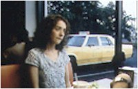
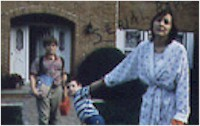
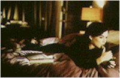

Contents | Features | Reviews | News | Archives | Store |
 |
|
| Movie Credits | Buy It! |
Happiness
Review by Sean Axmaker
Posted 16 October 1998
 |
Written and Directed by Todd Solondz Starring
Jane Adams, Dylan Baker, Laura Flynn Boyle, |
In Todd Solondz’s latest satirical look into the root cellar of American culture he leaves the adolescent cruelty of the Welcome to the Dollhouse junior high school setting for the even nastier, more corrupt adult world of… New Jersey. Yeah, ha ha. Easy target, like much of Solondz’s glib slice of old fashioned American misanthropy. Solondz piles on the taboos and lampoons them with assured comic lobs. There’s no denying it’s funny, but at what cost? Happiness is an assured, slick study in loneliness and urban alienation, slathered with irony and sparkling with heartbreaking moments of connection, and perhaps that’s the problem. For a few brief scenes Solondz touches the souls of his characters and loves them. For the rest of the film they’re merely stooges for his intellectual slapstick.
Solondz centers his universe around the lives of three sisters. Joy (Jane Adams), a 30 year old would-be folk singer and walking liberal cliché whose narrative purpose appears to be to embody the adage "No good deed goes unpunished," maintains a drippy optimism in the face of heartbreak and abuse. Trish (Cynthia Stevenson) is a blithely insulting, shallow housewife living the suburban dream and Helen (Lara Flynn Boyle) an egotistical, self-centered poet with a glamorous (but equally shallow) lifestyle and imperious pretentiousness even she recognizes as completely phony. Revolving around this little galaxy are Helen’s lonely neighbors Allen (Phillip Seymour Hoffman in one of the film’s standout performances), who acts out his sexual yearnings for Helen in obscene phone calls (which, naturally, turn her on), and Kristina (Camryn Manheim), an overweight lonely-heart who pines for Allen and harbors her own secrets.
Meanwhile their parents (Louise Lasser and Ben Gazzara) live a barely civil existence in a modern retirement community in Florida while their neighbor Diane (Elizabeth Ashley) puts the moves on Gazzara. And then there’s Trish’s family, the seemingly sitcom-perfect brood. Bill (Dylan Baker) is a successful psychiatrist and loving, attentive father haunted by violent dreams (it’s hard to call them nightmares because he wakes up feeling happy) and a crippling sexual perversion. You see, he likes little boys, and when he sees the boy of dreams (shot in the same gauzy slow motion manner you get in love stories, complete with the romantic strains of violins) he plots his "seduction," a child molestation engineered with the precision and timing of a Tarantino movie heist. In Solondz’s little universe, he’s the most sympathetic adult character.
Okay, it’s not really that simple. Solondz gives Bill a depth lacking in his other adult characters. Throughout the picture Bill’s adolescent son Billy comes to him for that old father-son talk about sex, and Bill takes him aside for a very frank and sincere discussion of things that would normally send an audience giggling in discomfort (and for all I know will regardless). But Dylan Baker’s thoughtful delivery, his gentle eyes and soothing voice create a caring father of Bill. And that’s what makes his violent transgressions (thankfully off screen) so much more profoundly troubling. It’s the character that’ll have every viewer talking and every critic arguing, but for all it’s calculating controversy it remains the painfully moving heart of the film.
The rest of the cast become cartoon figures in a social landscape Solondz creates in masterful detail. He keeps the camera restrained, just this side of intimacy so we don’t get too close, and constructs an urban/suburban world just right enough in the details to suggest the real world and the bland homogeneity of TV at the same time. But he doesn’t trust his audience enough to let it stand at that -- the soundtrack is an all too obvious construction of glibly ironic music: lushly romantic swells, jazz-lite, bouncy latin rhythms, chirpy feel good music, strings and glockenspiel muzak, and syrupy pop songs by Barry Manilow and Air Supply. It’s like a constant dig in the ribs -- I get it already!
The irony between Bill’s powerful, honest relationship with his son and his monstrous pedophilia may be calculated but it’s also moving and real -- when Billy bravely confronts his father about it, and Bill answers with naked, pained honesty. I can think of few films that reach that depth of empathy with anyone, let alone a figure we normally see treated with utter contempt. Bill is self aware, perhaps the only character who really understands himself -- he knows he’s sick and Solondz offers us the complicated duality of a man who hates the monster inside him while embracing the emotions such actions bring.
Similarly, Solondz offers a few moments of solace to Allen and Kristina, a tender dance in a smoky bar, a night spent in quiet embrace, a sweet sample of non-coital love. Philip Seymor Hoffman’s nervous nerd is as self aware as Baker’s Bill, but that doesn’t end his yearnings or his lust, he just channels them into solitary moments of fevered self gratification (which Solondz spices with an uncomfortably, hilariously outrageous spurt of bodily fluids). In these scenes Solondz’s craft and craftiness come together to create complex portraits in modern alienation. If we can’t exactly identify with them, at least we get a peak into their soul. Allen may be pathetic, but it’s a pathos we can understand.
That makes Solondz’s seeming contempt for the rest of his cast harder to fathom. The three sisters seem hardly worth feeling for: Trish and Helen can hardly see past their own plastic self images and Joy, heaped with scorn by all she meets, is played for easy laughs as if Solondz figures she deserves it for her chirpy optimism. And so it goes for the rest of the cast. It’s no so much that their lives are miserable, blind, shallow, and desperate, but that Solondz seems to agree and makes that the joke. That’s the calculation I can’t stand.
Happiness is funny -- at times blackly, hilariously funny -- but the way constructs his characters as figures of ridicule becomes too wearing by the time the film ends. In Welcome To the Dollhouse, Solondz had everyone laughing in recognition of the cruelty of adolescence, but he never gave up on his lead. She could be pathetic, clueless, victimized, made fun of, and even find someone lower on the pecking order and become a bully herself, but we never lost touch with her feelings -- she was real and she maintained her dignity throughout. In Happiness, but for a few beautiful scenes, Solondz has let the dignity go and ends up with a sitcom from hell. It’s funny, but at whose expense?
Be sure to read Nitrate Online's coverage of Happiness at the Toronto International Film Festival and an interview with Todd Solondz.
Contents | Features | Reviews | News | Archives | Store
Copyright © 1999 by Nitrate Productions, Inc. All Rights Reserved.